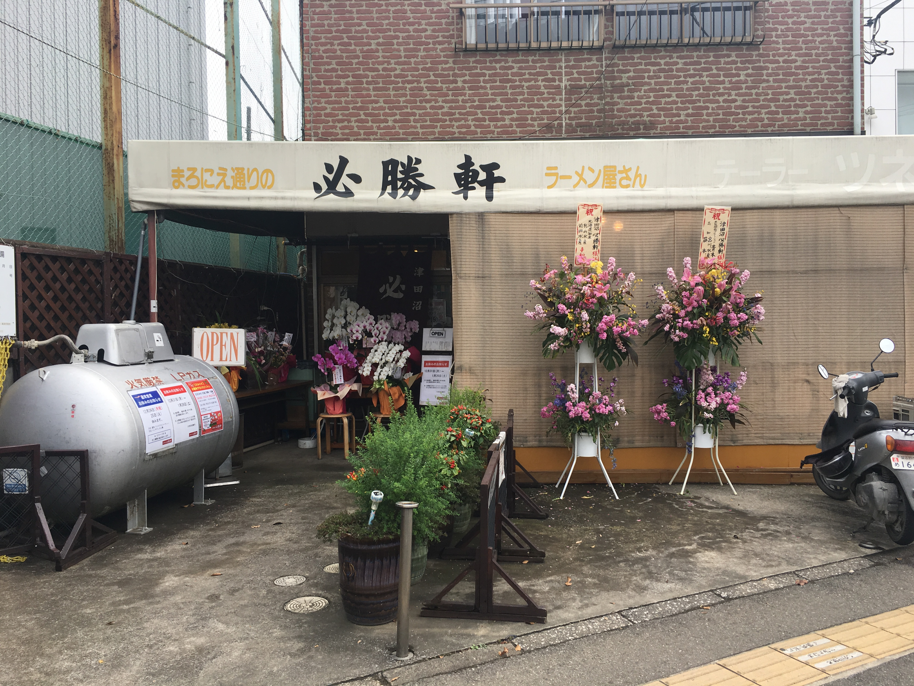

Distance from station
400 meters from JR Tsudanuma Station
phone number
047-474-8283
place
〒275-0016 5-9 Tsudanuma, Narashino City, Chiba Prefecture
business hours
19:00~21:20（Monday） 11:30~14:20（Tuesday · Thursday · Saturday · holiday） 11:30~14:20 19:00~21:20（Wednesday · Friday）
Regular holiday
Sunday
・Return to the ramen list